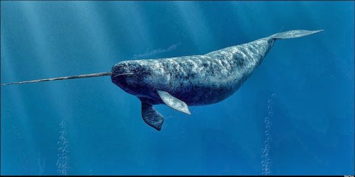

Monodon monoceros
Distribución geográfica
Esta especie está adaptada a vivir en el Ártico y se alimenta de animales del fondo marino. Carece de aleta dorsal y tiene un tamaño mediano entre los cetáceos, con una longitud promedio en los adultos que oscila ente 4 y 4,5 m y un peso de entre 1000 y 1600 kg. Posee una dieta que se restringe únicamente a algunos peces y crustáceos, de los cuales se alimenta primordialmente durante los meses de invierno, época en la cual consume un gran volumen de presas que captura en el fondo marino. Para ello debe realizar inmersiones que con mucha frecuencia superan los 800 m bajo la superficie, las cuales pueden durar hasta 30 minutos. Después del cachalote, zifio y elefante marino es el mamífero marino que se sumerge a mayor profundidad.
Se distribuye principalmente en aguas de la región ártica del norte de Canadá, los mares del lado ruso del océano Ártico y al norte del océano Atlántico. Habita principalmente en torno a los bloques de hielo que se forman durante los inviernos prolongados del Ártico, migrando a las bahías y fiordos circumpolares durante el verano. Se cree que la población mundial es de algo más de 75 000 ejemplares. En 2008 fue catalogado en la Lista Roja de la UICN como especie casi amenazada, debido a que se mantiene una caza significativa, controlada, por parte del pueblo inuit en Canadá y Groenlandia (Dinamarca), los cuales se benefician con su carne, grasa y el comercio del colmillo. También se ubicó en esta categoría por la evidente disminución en la población de algunos grupos, la falta de certeza sobre la cifra total de animales y el desconocimiento de las tendencias de crecimiento.
Biología
El narval fue una de las especies descritas por Linneo en 1758, en su obra Systema naturae.2 Es el único integrante del género Monodon y junto a la beluga conforma la familia Monodontidae perteneciente al suborden Odontoceti.3 Se cree que la hibridación entre estas dos especies es posible, debido al hallazgo de un cráneo con características intermedias.4 La familia Monodontidae se separó del resto de los delfinoideos hace entre once y quince millones de años; haciéndolo más recientemente de la familia Phocoenidae, la más cercana en términos evolutivos.5 Actualmente los dos integrantes de la familia Monodontidae habitan la región ártica y circumpolar, sin embargo, durante el Mioceno y Plioceno habitaron en aguas más cálidas, lo cual se evidencia por los fósiles descubiertos en Baja California.
Representación artística de Odobenocetops. En el registro fósil se encuentra un género extinto relacionado con el narval, llamado Odobenocetops (literalmente «ballena con cara de morsa»), el cual también poseía colmillos muy largos, pero a diferencia de este se orientaban en dirección posterior y en general eran pares; una adaptación similar a la de las morsas que posiblemente le servía para obtener alimento del fondo marino.
El nombre «narval» se basa en la palabra del idioma nórdico antiguo nāhvalr formada por los términos nār, que significa «cadáver», y hvalr, equivalente a ballena. Literalmente significa «cadáver de ballena», haciendo referencia al moteado gris del animal similar en apariencia a la piel de un cadáver humano.8 El nombre científico, Monodon monoceros, se deriva del griego Μονόδον (Monodon), «un solo diente» y μονόκερως (monoceros) «unicornio».
|
|
|
|
|
|